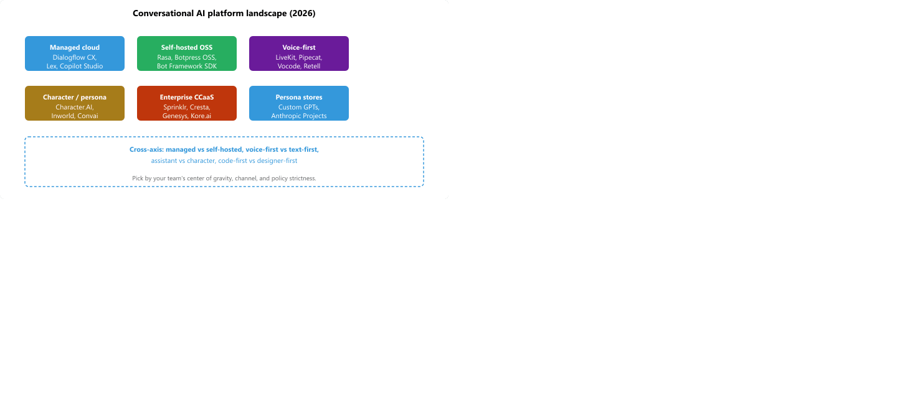
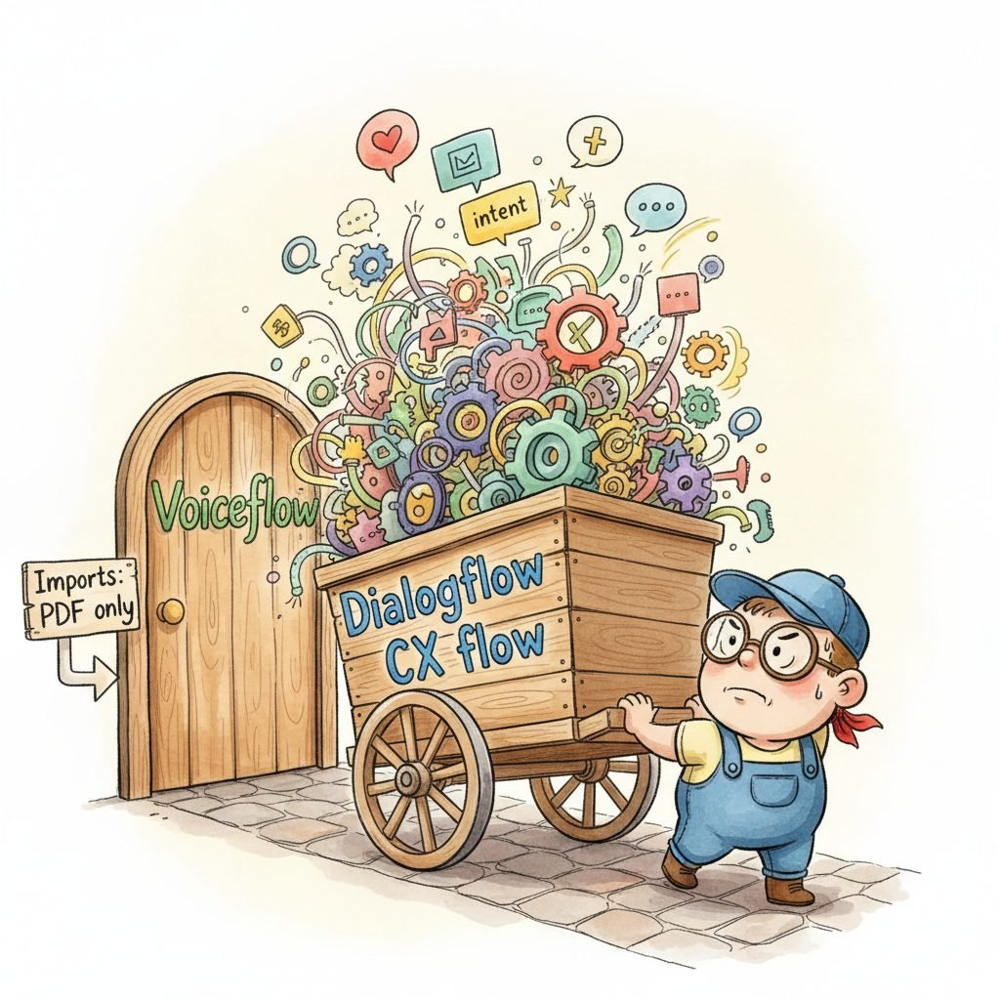

"Pick your platform along three axes; the fourth axis, regret, is supplied free by procurement six months later."
Pip, Vendor-Spreadsheet-Browsing AI Agent
A "conversational AI platform" is the opinionated environment in which you author a chatbot or voice agent: a place to design intents and dialogue flows, plug in an LLM (or a stack of NLU models), wire integrations to channels (web widget, WhatsApp, Slack, telephony), evaluate, and ship. The 2026 platform landscape splits four ways: enterprise contact-center suites (Sprinklr, Cresta, Genesys) that wrap a CCaaS around the LLM; cloud-managed builder studios (Dialogflow CX, Azure Bot Service, Amazon Lex, Voiceflow); open-source self-hosted stacks (Rasa, Botpress, Microsoft Bot Framework when self-hosted); and consumer persona platforms (Character.AI Studio, Inworld, Anthropic Projects, OpenAI's custom GPTs) where the "platform" is mostly a hosted prompt and memory store. Pick along three axes: managed-vs-self-hosted, voice-first-vs-text-first, and assistant-vs-character.
Prerequisites
This section assumes the LLM-API patterns from Section 14.1, the conversational-AI fundamentals from Section 37.1, and the realtime-voice platforms from Section 39.3.
The platform is the most consequential early decision in a conversational AI project, because everything downstream (the way you write intents or prompts, the way you store conversation state, how you evaluate, how you A/B test, which channels you can ship to) inherits its idioms. A team that picks Voiceflow rarely needs to write Python; a team that picks Rasa lives in YAML and Python. A team that picks Anthropic Projects writes prompts; a team that picks Dialogflow CX draws state machines. None of these are wrong, but they all bend the rest of your stack around their assumptions.
40.1.1 Managed cloud builder platforms
Managed cloud platforms are the right default when you do not have a deep ML team and "ship a working chatbot in six weeks" is a real constraint. They handle hosting, scaling, integration libraries (telephony, WhatsApp, web widgets), and (mostly) the conversational state machinery. You pay in vendor lock-in and per-conversation pricing.
- Dialogflow CX (Google, 2020; LLM-augmented 2024) is Google's flagship conversational AI builder, distinguished by an explicit visual state-machine model (Flows, Pages, Routes) rather than a flat intent classifier. Its objective is to make complex, multi-turn dialogues with branching and context inheritance designable by non-engineers, which matters because most real customer-service conversations are not a one-shot Q&A and break flat intent designs. The core concept is the Flow / Page graph: each Page is a state with parameter slots; Routes between Pages encode the conversation policy. The Generative Agents (2024) layer overlays a Gemini-based generator on top of the deterministic graph so you can mix LLM responses with strict policy enforcement. Pick Dialogflow CX when you are already on Google Cloud, when the conversation is genuinely state-machine-shaped (claims processing, scheduling), and when audit-friendly explicit transitions matter; avoid it when you want fully generative, free-form dialogue (the graph overhead becomes friction).
- Amazon Lex V2 (AWS, 2017; V2 in 2021; Bedrock integration 2024) is AWS's conversational AI service, sharing the same NLU engine as Alexa and built natively for AWS-stack telephony (Connect), Lambda fulfillment, and CloudWatch observability. Its objective is to give AWS customers a managed bot platform that fits inside their existing IAM, VPC, and billing without a new vendor relationship, which matters in enterprises where procurement is the binding constraint. The core concept is intent-and-slot NLU with deterministic fulfillment Lambdas, optionally augmented by a Bedrock LLM for fallback or generative responses. Pick Amazon Lex when AWS Connect (contact center) is your channel of record or when AWS procurement gravity dominates; avoid when you want first-class LLM-native conversation (Lex's slot-filling DNA still leaks through the LLM overlays).
- Microsoft Bot Framework + Azure AI Bot Service (Microsoft, 2016; Copilot Studio 2023-2024) is Microsoft's bot SDK plus its managed hosting service, and as of 2024 the Bot Framework lineage has largely been rebranded under Microsoft Copilot Studio for the low-code authoring experience while the SDK remains for code-first builders. Its objective is to give .NET / Microsoft 365 shops a first-class bot framework that integrates with Teams, Outlook, and the broader Copilot ecosystem, which matters when your distribution channel is Microsoft 365 itself. The core concept is the Activity / Turn protocol: a uniform conversation event model the SDK uses across channels, plus a Composer authoring tool that compiles to declarative dialog JSON. Pick the Microsoft stack when Teams and Microsoft 365 are the channels and when Copilot Studio's no-code authoring is enough; for code-first, the SDK is mature but lower-momentum than alternatives.
- Voiceflow (Voiceflow Inc., 2019) is a designer-led visual platform for conversational and voice agents, originally built for Alexa skill authoring and now broadly used for AI agent prototyping in cross-functional teams. Its objective is to let designers, PMs, and engineers collaborate in a single canvas where the bot's logic, prompts, and integrations are all visible without code, which matters when conversation design (the words and turn structure) is the actual scarce skill. The core concept is a flowchart canvas of "blocks" (intent capture, LLM call, API call, condition, response) plus a Knowledge Base feature that wraps a hosted RAG pipeline. Pick Voiceflow for design-led teams who want to prototype quickly and ship to multiple channels (web, voice, IVR); avoid for engineering-heavy stacks that want everything in code-as-truth.
- Botpress (Botpress, 2017; v12 OSS + Cloud 2023+) sits between managed and self-hosted: there is a free open-source Botpress Studio and a managed Botpress Cloud SaaS, both built around the same authoring model. Its objective is to give developers the visual conversation designer plus the option of self-hosting and customizing internals, which matters when you want vendor neutrality but do not want to assemble Rasa from scratch. The core concept is a hybrid of visual flow design and TypeScript "actions" you write in code, plus first-class LLM integration via "LLM nodes" that call OpenAI, Anthropic, or your own endpoint. Pick Botpress when you want a visual builder with an escape hatch into TypeScript and the option to self-host; for pure no-code, Voiceflow is more polished; for pure code-first, Rasa is leaner.
- OpenAI Custom GPTs and the GPT Store (OpenAI, 2023-2024) are not a "platform" in the contact-center sense, but they are where the long tail of internal-tool bots and consumer experiences live in 2026. Their objective is to make "deploy a configured ChatGPT with instructions, knowledge files, and actions" a no-code task, which matters when you want a workflow assistant inside ChatGPT itself rather than as a separately distributed app. The core concept is a Custom GPT (system prompt + uploaded knowledge + optional Actions calling external APIs) listed in a personal or organizational GPT Store; for programmatic use the Assistants API exposes the same primitives plus persistent threads. Pick Custom GPTs for ChatGPT-Plus distribution and for fast internal-tooling bots inside a company already on ChatGPT Enterprise; avoid for multi-channel deployment (web widget, telephony, WhatsApp) where you need a real platform.
- Anthropic Projects and Claude for Work (Anthropic, 2024-2025) are Anthropic's analog: shared workspaces in Claude where a system prompt, an uploaded knowledge corpus (PDFs, docs), and an artifact-rendering surface are bundled into a reusable conversational tool. The objective is to let a team collaborate around a Claude configuration without each member rewriting the prompt, which matters for internal-tooling use cases (an analyst-assistant project, a writing-coach project) where the bot lives inside Claude's UI rather than a custom app. The core concept is project-scoped context (knowledge files + custom instructions) that injects into every conversation in the project. Pick Anthropic Projects for the same use cases as Custom GPTs when your team is on Claude; for programmatic integration you drop down to the Messages API directly.
40.1.2 Self-hosted and open-source platforms
Self-hosted platforms are the right default when data residency, on-prem deployment, deep customization of the NLU pipeline, or freedom from per-conversation pricing dominate. You pay in operational complexity and a longer time-to-first-bot.
- Rasa Open Source (Rasa Technologies, 2017; Rasa Pro / CALM 2024) is the longest-running open-source conversational AI framework and the reference design for self-hosted bots, with a 2024 reboot called CALM (Conversational AI with Language Models) that replaced the legacy DIET intent classifier with an LLM-driven dialogue understanding layer. Its objective is to provide an end-to-end framework you can host on your own infrastructure, including NLU, dialogue policy, action server, and channel connectors, which matters when data must never leave your VPC. The core concept (post-CALM) is the Command Generator: an LLM converts user utterances into structured "commands" (set_slot, start_flow, cancel_flow) that a deterministic state machine executes, so the LLM controls understanding but not the policy. Pick Rasa when self-hosting is a hard requirement, when you have a team comfortable with Python and YAML, and when audit-friendly deterministic dialogue policy matters; avoid for small teams whose first need is "ship something next month" (the learning curve is steep).
- Botpress OSS (Botpress, 2017) is the self-hosted lineage of Botpress, still maintained as the v12 open-source release and the foundation for the Botpress Cloud SaaS described in the managed section. Its objective is to provide a visual conversational builder that runs on your own servers, with TypeScript actions and a plugin model for custom NLU or LLM backends. The core concept is the same flow + action design as Cloud but in a self-hostable Docker container. Pick OSS Botpress when you want Botpress's visual experience without sending data to the cloud; for pure code-first self-hosting, Rasa is the canonical choice.
- Microsoft Bot Framework SDK (Microsoft, 2016) is the open-source SDK underlying Azure Bot Service. Its objective is to give code-first developers a uniform conversation API across channels (Teams, web, Telegram, Slack) that runs anywhere you can host a Node.js or .NET process, which matters when you want a code-first bot that ships outside Azure too. The core concept is the Activity protocol plus the Bot Builder dialogs library. Pick the SDK when you want a code-first bot, prefer .NET or modern TypeScript, and want a portable framework; for cloud-managed authoring, Copilot Studio sits on top of the same protocol.
- Haystack Agents (deepset, 2020+) and LangChain Agents (LangChain Inc., 2022+) are not "platforms" in the visual-builder sense, but they are increasingly the de facto self-hosted choice for engineering teams who want code-as-truth conversational agents. Their objective is to provide a Python framework with conversation memory, tool use, and channel connectors without imposing a visual designer or a state machine, which matters when your team prefers writing Python to drawing flowcharts. The core concept is a Runnable / Pipeline graph where messages flow through retrieval, tool calls, and an LLM step. Pick these when your team is engineering-led and wants no platform UI between code and the bot; the libraries are covered in detail in Section 40.2.
40.1.3 Voice-first and realtime platforms
Voice-first platforms are a separate category because the latency budget (sub-second turn-around for natural conversation) and the audio pipeline (microphone capture, VAD, ASR, TTS, barge-in) dominate the design. Some are extensions of text platforms; others are voice-native.
- LiveKit Agents (LiveKit, 2023; v1 in 2024) is the agent framework built on top of LiveKit's WebRTC media infrastructure, designed for sub-500ms latency voice agents that participate in audio/video calls as a peer. Its objective is to make "drop a voice agent into a Zoom-like meeting" a few-hundred-lines-of-Python task, which matters when your channel is real-time voice rather than a phone IVR. The core concept is the VoiceAssistant primitive that wires VAD, STT, LLM, and TTS providers into a single object exposing audio-track input and output. Pick LiveKit Agents when WebRTC voice agents in browsers or apps are your channel; the framework itself is covered in 40.2.
- Pipecat (Daily.co, 2024) is Daily's open-source framework for real-time conversational voice and video agents, conceptually similar to LiveKit Agents but with a stronger emphasis on pipeline orchestration as a first-class abstraction (named filters and aggregators rather than a monolithic VoiceAssistant). Pick Pipecat when you want explicit per-stage control over the voice pipeline (insert a custom barge-in filter, swap STT mid-call); pick LiveKit Agents when the canonical happy path is enough.
- Vocode (Vocode, 2023) is an open-source Python library for telephony-first voice agents, with Twilio, Vonage, and direct SIP integrations as a primary concern. Its objective is to make outbound and inbound phone calls (not WebRTC) the first-class channel, which matters when your use case is "AI receptionist that picks up the phone" or "outbound sales-qualification call". Pick Vocode when telephony is the channel of record; LiveKit and Pipecat assume WebRTC.
- OpenAI Realtime API (OpenAI, Oct 2024) and Gemini Live API (Google, 2024) are the underlying speech-to-speech APIs rather than full platforms, but they are increasingly used directly as the "platform" for thin voice-agent apps. Their objective is to skip the cascaded STT-LLM-TTS pipeline entirely (single model, audio in, audio out), which matters for latency (the cascade's 500-1000ms turn cost collapses to ~300ms) and prosody (the model can hear emotion and interrupt naturally). Pick the realtime APIs when latency and natural prosody dominate; pair with LiveKit or Pipecat as the transport layer.
- Retell AI and Bland.ai (2023-2024) are managed voice-agent platforms that wrap the realtime APIs behind a no-code authoring UI plus telephony providers. Their objective is to be the "Voiceflow for voice agents in 2026", letting a non-engineer ship a phone-callable bot in an afternoon. Pick when speed-to-market dominates and you do not want to assemble Vocode + Twilio + the OpenAI Realtime API yourself; avoid when you need bespoke logic the no-code surface does not expose.
A cascaded voice agent (mic to VAD to STT to LLM to TTS to speaker) must fit its turn-around under a target $T_{\text{target}} \approx 300$ ms, the threshold above which human listeners perceive the gap as awkward (Brady 1968; Heldner & Edlund 2010 measured median human-human gaps of 200-300 ms in spontaneous dialogue). The per-stage budget for a tuned 2026 cascade: mic capture 10-30 ms; VAD endpointing 100-200 ms (this is the dominant fixed cost: you must hear silence to declare end-of-turn); network RTT to the cloud 50-100 ms; streaming STT first-final 100-300 ms; LLM time-to-first-token 200-600 ms; TTS first-audio chunk 80-200 ms; return network 50-100 ms; client-side jitter buffer 20-60 ms. Summing the medians gives $T_{\text{cascade}} \approx 500\text{-}1000$ ms, which is why even the best cascaded stacks feel a beat slow. A unified speech-to-speech model (GPT-4o Realtime, Gemini Live, Moshi) collapses STT + LLM + TTS into a single forward pass on audio tokens, eliminating ~400 ms of intermediate text serialization and pushing total turn-around to $T_{\text{s2s}} \approx 300$ ms, at the 300-ms turn-taking threshold. The remaining latency budget is mostly VAD and network, neither of which the model can shrink. This is why the speech-to-speech APIs feel qualitatively different from cascades, even when the underlying language quality is similar.
40.1.4 Character and persona platforms
Character platforms are an adjacent category aimed at consumer entertainment, NPC dialogue in games, and companion / coaching apps. The platform's job here is character design, persistent persona memory, and consumer-grade scale rather than enterprise integration.
- Character.AI Studio (Character.AI, 2022) is the consumer-facing character platform with the largest user base (peaking at approximately 2 billion messages per month in 2023-2024), built around the metaphor of "characters" with bios, example dialogues, and a persistent memory. Its objective is to let any user design a chatbot persona without writing code (and then chat with it indefinitely), which matters as the most pure expression of "persona-first" conversational AI. The core concept is the Character: a structured persona descriptor that becomes the system prompt for a Character.AI-trained chat model (now backed by Llama-derived models under Google after the 2024 deal). Pick Character.AI Studio for consumer-facing characters with hosted distribution; for embedding into your own app, the Inworld and Anthropic stacks are more appropriate.
- Inworld AI (Inworld, 2021) is a character platform aimed at games and immersive experiences (NPC dialogue, virtual companions), distinguished by deep support for character state (mood, goals, relationships) and emotion-aware TTS. Its objective is to make AI NPCs that maintain plausible long-running personality, which matters for games where a character forgetting last session's events breaks immersion. The core concept is a multi-component character description (Brain, Personality, Goals, Relationships) plus a real-time runtime for game engines (Unity, Unreal SDKs). Pick Inworld when the deployment target is a game or virtual world; for chat-app distribution, Character.AI's reach is larger.
- Pi by Inflection (Inflection AI, 2023-2024) is more product than platform (you cannot "build" a Pi character), but it is the canonical reference for what consumer companion AI looks like when the model is itself the platform. The objective is empathetic, warm, voice-first conversation tuned for ongoing companionship rather than task completion. Pick Pi as a reference when designing companion-style products; its evolution after Microsoft's 2024 acqui-hire of Inflection's leadership and the team's repositioning into Microsoft's consumer AI work is worth tracking.
- Convai (Convai, 2022) is a smaller competitor to Inworld in the game-NPC space, focused on Unity / Unreal integration with low-latency speech-to-speech NPC dialogue. Pick Convai when Inworld's pricing or features do not fit and you specifically want a leaner, more developer-direct game-engine integration.
40.1.5 Enterprise contact-center AI platforms
Contact-center AI platforms are a distinct category: they wrap a conversational AI capability inside a full contact-center-as-a-service (CCaaS) suite (agent assist, supervisor analytics, quality assurance, workforce management). The bot is a single product line among many, but the integration with live agent handoff, omnichannel routing, and compliance is where the value sits.
- Sprinklr Conversational AI (Sprinklr, 2009; AI platform 2020+) is the conversational AI module inside Sprinklr's unified customer experience management (CXM) platform, designed for omnichannel enterprises (a single bot answering on web, WhatsApp, SMS, Twitter DMs, and live chat at once). Its objective is to be the bot inside an enterprise's existing CXM rather than a separate platform, which matters when channel breadth and unified inbox routing are the dominant requirements. Pick Sprinklr when you already use the CXM platform; the bot value compounds with the rest of the suite.
- Cresta (Cresta, 2017) is a contact-center AI platform focused on agent assist and AI agents for sales and support, distinguished by domain-specific LLMs fine-tuned on individual contact-center transcripts. Its objective is to deploy agents that match the customer's actual conversation patterns rather than a generic bot, which matters in regulated industries (financial services, telco) with strict tone and disclosure requirements. The core concept is per-customer fine-tuning plus tight integration with existing CCaaS providers (Genesys, Five9, NICE). Pick Cresta when you have a large existing transcript corpus and tone/compliance dominate; for greenfield use cases, generic platforms suffice.
- Genesys Cloud Virtual Agent and NICE CXone (Genesys, 2015+; NICE 2010+) are the bot modules of the two leading CCaaS platforms. Their objective is the same as Sprinklr's: be the conversational module inside the CCaaS you already run, which matters when your contact center is the system of record for customer interactions. Pick by which CCaaS your enterprise already runs; the bot quality differences are small compared to the integration value with existing routing and agent desktops.
- Kore.ai (Kore.ai, 2014) is an enterprise conversational AI platform that targets both contact-center and internal-employee assistant use cases, with a strong industry focus on banking, healthcare, and retail. Its objective is to be the enterprise platform of record for conversational AI across multiple bot use cases (customer-facing, employee-facing, IT helpdesk) rather than a single-purpose tool. Pick Kore.ai when enterprise procurement values one vendor across multiple bot programs.
40.1.6 Choosing a platform
The platform choice mostly reduces to four questions: who builds (designers vs engineers), where it runs (cloud vs on-prem), what the channel is (text vs voice vs game NPC), and how much the bot must respect a strict policy graph (high for healthcare, finance; low for casual / creative).
A team that picks Rasa will spend the first month writing Python and YAML; a team that picks Voiceflow will spend the first month sketching flows in a canvas; a team that picks "just call the Claude API from a Next.js app" will spend the first month building their own conversation store. None of these are wrong, but switching costs are high after the first month. The right way to choose is to map your team's center of gravity (designer-led, engineer-led, ops-led) and your distribution channel (Web widget? WhatsApp? IVR? Game NPC?) first, then pick the platform that matches both.
A US health-insurance carrier piloted a claims-status bot in 2024-2025. The team evaluated three architectures: (a) a generative-first Anthropic Projects bot grounded by RAG over claim documents, (b) a code-first Rasa bot with deterministic flows, and (c) Dialogflow CX with the Generative Agents overlay. The team picked (c) and reported the deciding factor as audit: compliance required that every dialogue path the bot could take be enumerable in advance for the State Department of Insurance review. The Dialogflow CX graph is reviewable as a static artifact; the generative-first bot is reviewable only via simulated transcripts (which auditors push back on). The Generative Agents layer let the team use LLMs for natural fallback and intent disambiguation without giving up the static-policy story. This is the most common reason regulated-industry teams pick state-machine platforms over generative-first ones in 2026.
These three terms are used loosely in this space. A useful distinction: a platform ships an opinionated authoring UI plus hosting (Dialogflow CX, Voiceflow); a framework ships code libraries you run yourself (Rasa, LangChain, Bot Framework SDK); an API ships only the model endpoint (OpenAI Chat Completions, Anthropic Messages). Most production deployments combine layers: a Rasa framework calls the Anthropic Messages API, hosted on the team's own infrastructure. The platform-vs-framework column in vendor comparisons is more important than the "AI capability" column for the first three months of a project.
40.1.7 Mapping the landscape

40.1.8 Deployment channels and integration considerations
The platform choice constrains and is constrained by the channels you ship to. The 2026 channel matrix that matters most for production conversational AI is below; the channels are roughly ordered by reach (web reaches everyone, game-engine NPCs reach a niche) and each has its own latency budget, content-format constraints, and regulatory wrinkle. Picking a managed platform mostly closes one of these doors at a time: a Microsoft Copilot Studio bot ships into Teams effortlessly but takes weeks to glue to a WhatsApp BSP.
- Web chat widget (embeddable): every platform ships one; quality varies in customization. Botpress and Voiceflow are designer-friendly; Dialogflow CX has a generic widget plus a richer Agent Assist UI; the homegrown React widget (built on Vercel AI SDK or AG-UI) gives the most control and is the right default when the bot is the primary product surface. Intercom's 2024 Fin AI agent (a widget on top of GPT-4 plus their knowledge base) is the reference deployment shape: same-domain iframe, server-side conversation state, SSE token stream to the widget.
- WhatsApp Business API: Meta-mediated; requires a Business Solution Provider (Twilio, MessageBird, 360dialog). Most managed platforms ship native WhatsApp connectors; for self-hosted (Rasa, Botpress OSS) you wire WhatsApp via a BSP webhook. The 24-hour messaging-window rule (you can only proactively message inside 24 hours of a user message unless you use approved templates) is the recurring source of design constraints. WhatsApp Business Platform pricing in 2025 ran $0.005-$0.10 per conversation depending on category (utility, marketing, service) and country, so a bot with proactive notifications can owe Meta more than it owes OpenAI.
- SMS: simpler than WhatsApp, less rich. Twilio Conversations and Vonage Messages APIs are the canonical paths; all major platforms support SMS as a channel. The 160-character segment limit and the US 10DLC registration requirement (rolled out in 2023, with $1,500 brand-registration fees in 2024-2025) are the two surprises that catch teams who treat SMS as a quick win.
- Telephony / IVR: voice-first channel with the strictest latency budget. Amazon Connect, Twilio Voice + Voice SDK, Genesys Cloud, NICE CXone are the providers; Dialogflow CX has first-party Connect integration; Vocode and Pipecat-with-Twilio are the self-hosted paths. The voice-agent platforms (Retell, Bland) bundle telephony plus the realtime model. The 300 ms perceived-latency budget for natural conversation is what forces real-time S2S models (GPT-4o Realtime, Gemini Live) at this layer; a cascaded STT-LLM-TTS pipeline typically lands at 700-1200 ms end-to-end.
- Microsoft Teams: native channel for Microsoft Bot Framework and Copilot Studio; possible via Bot Framework Web Chat for other stacks. Copilot Studio is the natural pick when Teams is the channel. The 2024 Microsoft 365 Copilot enterprise rollout (320M Microsoft 365 commercial seats globally) made Teams the single largest internal-bot deployment surface; for HR / IT helpdesks targeting Teams the case for the Microsoft stack is close to overwhelming.
- Slack: most platforms have a Slack connector; for self-hosted bots, Bolt for Python/JS plus a custom adapter is the canonical path. Slack's 3-second initial-response window (before the message is marked as a delivery failure) is the constraint to design around; long-running LLM calls require an immediate "thinking..." ack followed by a delayed update.
- WebRTC voice and video: LiveKit, Daily, Twilio Voice SDK, Agora. Most voice-agent platforms (LiveKit Agents, Pipecat) target one or two of these as the transport. LiveKit Agents 1.0 (mid-2024) became the de-facto open-source path here, paired with one of GPT-4o Realtime, Gemini Live, or a Deepgram-plus-Cartesia cascade.
- In-app embedded copilots: CopilotKit for React apps; framework-specific kits for other stacks. The platform-of-record here is usually the LLM API directly, with CopilotKit as the UI layer. CopilotKit's
useCopilotReadablehook (exposed in 0.x and stable in 1.0) is the reference pattern for letting the assistant read app state without a custom retrieval pipeline. - Game NPCs: Inworld and Convai are the platform-of-record; for engine integration, Unity and Unreal SDKs ship with both. Inworld's 2024 partnership with Microsoft for the Xbox AI Toolset is the canonical AAA-game integration; for indie titles the Convai Unity asset (free under 1k MAU) is the more typical entry point.
40.1.9 Build-vs-buy in 2026
The 2026 build-vs-buy decision has shifted relative to 2022. In 2022, "build your own bot from scratch" usually meant assembling intent classification, slot filling, dialogue policy, and response generation by hand and most projects benefited from a platform that bundled those primitives. In 2026, the LLM has collapsed most of the NLU stack into a single model and the build-vs-buy decision is now mostly about:
- How much of the channel-integration plumbing do you want to own? Every channel (WhatsApp, telephony, web widget) has its own quirks (delivery receipts, attachment handling, 24-hour windows for WhatsApp, DTMF handling for telephony). Platforms handle these; self-built bots need to.
- How much of the conversation analytics do you want to own? Production bots need at minimum: per-conversation logs, per-turn metrics, a way to flag and review bad responses, A/B testing infrastructure, drift detection. Platforms ship this; self-built stacks need to integrate observability (Section 31 in Part VII covers the relevant tooling).
- How strict is the policy graph? Highly regulated domains (insurance, healthcare, finance) often need an auditable static dialogue graph that the bot cannot deviate from. Platforms like Dialogflow CX and Rasa CALM make that graph the primary artifact; pure LLM-as-bot architectures need to add a policy layer on top.
- What is the team's distribution of skills? If you have one designer and one engineer, a managed platform with a visual builder amplifies the designer. If you have a five-engineer team, the platform gets in the way and code-first frameworks win.
The default in 2026 has shifted toward "build using the LLM APIs directly, plus best-of-breed individual libraries (memory, UI, voice runtime), self-hosted on your own infrastructure" for engineering-led teams, and "managed platform with LLM overlay" for designer-led or compliance-heavy teams. Both paths are reasonable; the wrong default is to pick a platform because "we always pick Salesforce / Microsoft / Google" without weighing what your team actually optimizes for.
Every managed platform creates lock-in in three places: the dialogue authoring artifact (a Dialogflow CX flow does not export to Voiceflow), the conversation log format (you cannot easily replay logs across platforms), and the integration plumbing (channel connectors, telephony, analytics). The lock-in is highest for visual-builder platforms (Dialogflow CX, Voiceflow) and lowest for SDK-based ones (Bot Framework SDK, Rasa). This is sometimes a fair trade for the velocity of a managed authoring experience; the wrong answer is to discover the lock-in two years in. Ask explicitly during evaluation: "if we decided to leave in three years, what could we export and what would we have to rebuild?"
The shape of that migration tax is captured in Figure 40.1.2: a flow that was easy to build in one tool becomes an awkwardly oversized cargo when you try to push it through another vendor's door.

40.1.10 Platform pricing shapes
Conversational AI pricing falls into four shapes. Each one warps your incentives differently once volume scales:
- Per-conversation pricing (Dialogflow CX charges per dialogue session, most CCaaS platforms charge per AI-handled conversation) is the most predictable and the most punishing at high volume. A bot handling 1M monthly conversations at $0.04 per is $40k/month before any LLM cost.
- Per-message or per-API-call pricing (some Voiceflow plans, Lex per-request) is finer-grained. Watch for hidden multipliers (slot-filling calls, LLM-call passthroughs).
- Per-seat licensing (Microsoft Copilot Studio, enterprise CCaaS suites) is common for internal-employee bots. The seat model can be cheaper for many internal users with few interactions each, more expensive for many external interactions with no seat anchor.
- Compute + LLM cost passthrough (self-hosted Rasa / Botpress OSS, build-it-yourself) is the most opaque (your team's time + your infrastructure bill + your LLM bill) but the cheapest at large scale once you have absorbed the operational learning curve.
The most common production mistake: launching on per-conversation pricing, then discovering six months later that user growth has outrun the budget. Always model cost at 10x current volume before committing.
40.1.11 Platforms by vertical: a quick map
Different industries have converged on different platform defaults, partly for technical reasons (data residency, compliance graphs) and partly for sales-channel reasons (which vendors have the strongest enterprise reps in that vertical). The 2026 vertical-specific picks worth knowing:
- Healthcare: Dialogflow CX (with HIPAA-eligible configuration on GCP) and Microsoft Copilot Studio (Microsoft 365 / Teams + Azure compliance) are the dominant enterprise picks. Rasa is the self-hosted default for organizations that need on-prem (e.g., hospital systems with strict data-egress rules). The Anthropic Projects route is increasingly used for internal clinician-assistant tools where the audit story is simpler (private to the organization, no external customers).
- Financial services: Sprinklr, Cresta, and Kore.ai dominate the customer-facing contact-center side because they ship with the compliance audit packages banks expect (PCI, model-risk-management documentation, recorded-conversation retention). The build-it-yourself stack on Anthropic + Rasa is growing for internal-employee assistants where regulatory burden is lighter.
- E-commerce and retail: Voiceflow, Botpress, and the LLM-direct route (build on Anthropic / OpenAI APIs with the Vercel AI SDK on the front-end) have effectively replaced the older intent-based platforms because product-discovery and shopping conversations benefit from generative-first responses. The CCaaS suites (Genesys, NICE) handle the post-purchase support side.
- Telecommunications: Genesys Cloud Virtual Agent, NICE CXone, and Amazon Lex (paired with Connect) are the dominant picks because the telephony-channel integration is the binding constraint. Cresta is increasingly used for agent-assist sitting on top of these.
- Government and public sector: Microsoft Copilot Studio (Azure Government compliance) and Dialogflow CX (Google Cloud's government compliance) dominate; on-prem deployments rely on Rasa or Microsoft Bot Framework SDK self-hosted.
- Gaming: Inworld and Convai dominate NPC dialogue; for chat-only character-driven games, Character.AI's API is sometimes used (when available) or a self-hosted Llama / Qwen fine-tune. Steam's Workshop-style modding communities have produced their own conventions around bot scripting that the platforms partly support.
- Education: a mix of Custom GPTs (for tutor-style assistants distributed via ChatGPT), Anthropic Projects (for institution-managed tutors), and direct API integrations into LMS platforms (Canvas, Blackboard) via custom apps. The market is fragmented because the procurement cycles are slow and per-student licensing is the dominant pricing question.
40.1.12 Platform evaluation checklist
When evaluating a conversational AI platform, the questions that surface lock-in and capability gaps:
- Export: can you export the dialogue authoring artifact in an open format? (YAML, JSON, etc.) Or only the platform's proprietary format?
- Conversation log access: can you stream conversation logs to your own observability stack, or only view them in the platform UI?
- LLM choice: are you locked to the platform's model, or can you bring your own (BYO key) for OpenAI / Anthropic / Bedrock / etc.?
- Custom code execution: where does business logic run? Webhook from the platform to your code? Embedded scripting? Or platform-managed Lambdas you cannot easily move?
- Authentication and identity: how does the bot know which user it is talking to, and how does that identity flow into your existing systems?
- Audit logging: what gets logged, for how long, where is it stored, who can access it?
- Cost ceiling: at 10x your current volume, what does this cost? At 100x?
- Vendor stability: what is the platform's funding / parent-company stability? (Several voice-agent platforms have been acquired in 2024-25 with disruptive product changes; this is a real risk.)
- Eval and observability hooks: can you wire your eval pipeline to test changes before they ship to users?
- Multi-language support: if you need additional languages later, is that a model swap or a platform rebuild?
A team that asks these questions during evaluation usually picks a different platform than a team that picks based on the demo video alone.
What's Next?
In the next section, Section 40.2: Libraries and Frameworks, we build on the material covered here.